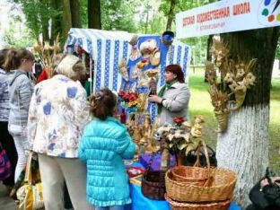
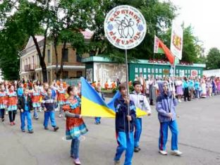
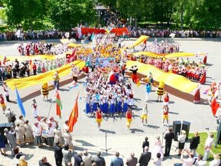

XII
Международный фестиваль детского творчества
«Золотая пчёлка».
XII Международный фестиваль детского творчества «Золотая пчёлка», на который
собрались юные дарования из 9 стран: Беларуси, Украины, России, Латвии,Литвы,Эстонии, Молдовы, Казахстана и Таджикистана, проходил в нашем
городе в период с 30 мая по 3 июня 2012 г.
Представители этих стран с завидным постоянством приезжают в наш город,
чтобы порадовать хозяев и гостей своим творчеством.

Конкурс проводился в двух возрастных категориях
— младшая
(9–12 лет включительно), старшая (13–16 лет
включительно) в следующих
жанрах по номинациям:
«Вокальное искусство» – номинации:
солисты, ансамбли (дуэт, трио, квартет и др.) народного и эстрадного
пения;
«Хореографическое искусство» – номинации:
хореографические коллективы народно–сценического, эстрадного
танца;
«Изобразительное искусство» (для участия в конкурсе
непосредственно принимаются только творческие работы) –
Номинации: живопись, графика;
«Декоративно–прикладное искусство» (для
участия в
конкурсе непосредственно принимаются только творческие работы.)
–
Номинации: декоративно–прикладное творчество, художественные
ремесла.
Оценивало выступления и творческие работы
конкурсантов профессиональное и авторитетное международное
жюри. Его возглавила
заслуженный деятель культуры Беларуси, художественный руководитель
Национального центра музыкальных искусств им. В.Мулявина Светлана
Стаценко.
Жителей и гостей нашего города во время детского
праздника ожидала масштабная культурно–развлекательная
программа. Во
время праздничного
концерта «Радуга детства» прошли творческие
презентации
стран–участниц фестиваля.
Как и в прошлом году, фестиваль начался в
гододе Могилёве. В
первый день участники фестиваля посетили достопримечательности
областного центра — Советскую площадь, ратушу,
Свято–Никольский
монастырь. Побывали и на Буйничском поле.
Торжественное открытие фестиваля состоялось 1 июня. Этот день начался с
прослушивания солистов и вокальных ансамблей народного плана, а также
просмотра выступлений хореографических коллективов, творческих работ
юных художников и мастеров.
В вечерней программе был концерт оркестра народных инструментов им. Л.
Иванова областной филармонии при участии молодых талантов Могилёвщины
—
лауреатов международных и республиканских конкурсов.
Порадовали как детей, так и взрослых шоу мыльных пузырей, лазерное шоу
и праздничный фейерверк.

В субботний день — 2 июня — зрители могли
посмотреть конкурсные
программы солистов-эстрадников.
Особенно впечатлила старшая группа конкурсантов. Оригинальной
программой, основанной на местных народных
традициях, порадовали фольклорные подворья учреждений
культуры ряда районов нашей области.
Сувениры, сделанные руками мастеров декоративно–прикладного
искусства,
и работы юных художников можно было не только увидеть, но и приобрести
на выставке–продаже «Лавка чудес»
— она работала на протяжении
всего фестиваля. Лучшие танцоры показали свое мастерство в конкурсе
молодежных команд брэйк–данса «Звёздный
подиум». В формате фестиваля
состоялся творческий вечер поэта–песенника Ивана Титовца с
участием народного артиста Беларуси Игоря Лученка и ансамбля
белорусской песни
«Терница».
В детской художественной школе проходили выставки конкурсных
работ участников фестиваля: декоративно–прикладное искусство
«Академия детского творчества» и изобразительное
искусство
«Волшебные краски детства». Также прошли
традиционные конкурсы юных художников:
рисунка на мольберте «Фестивальная страна» в
городском
парке и детского рисунка на асфальте «Подарок
фестивалю» на площади Великого
Октября. Кроме того, творческие работы ребят экспонировались на
вернисаже
юных художников детских школ искусств.
В городском парке работали игровые и спортивные площадки. На
радость детворе прошла игровая программа
«Играй–Город» и
«Праздник мороженого». Также жители и гости нашего
города смогли посетить
выставку–презентацию белорусской книги «Мы
— мира дети», посвященную Году книги,
районные конкурсы «Воздушная
феерия« и «Парад детства», конкурс
«Мисс Золотая пчёлка», спортивный
парад. На
протяжении фестиваля работала выставка-продажа сувенирной
продукции и других товаров с символикой фестиваля «Золотая
пчёлка».
Первыми из ребят свои награды получили участники конкурсов, которые
каждый год проводятся в рамках фестиваля. За рисунок на асфальте
Дипломов первой степени удостоены Анастасия Гавлинская и Мария Галица
(г. Климовичи), Мария Патина (г. Смоленск); за рисунок на мольберте
— Алина Комаровская (г. Климовичи), София Котова (г.
Рославль) и
Александра Самсонова (г. Кричев). В числе награжденных были также
климовчане Борис Щербаков, Елизавета Суялко и Марина Сергеева (второй
степени), Данила Рыжиков и Ольга Гершанкова (третьей степени).
Вечером этого же дня в амфитеатре возле
Центрального парка состоялось большое шоу с участием звезд белорусской
эстрады, организатором которого выступила компания МТС. Участников
фестиваля, гостей и жителей нашего города поздравили такие исполнители,
как Вера Каретникова, Венера, Гюнешь, группа Биатрис.

И вот наступил финальный день праздника детства
— 3 июня, воскресенье. Утром в районном центре культуры
состоялось вручение дипломов участника фестиваля. Завершающими
аккордами фестиваля стало праздничное шествие участников и гостей
фестиваля по ул. Советской, торжественная церемония
награждения
лауреатов и участников фестиваля, а также заключительный
гала–концерт
«Волшебный аккорд детского творчества» в городском
парке.
Дипломами первой степени награждены:
в номинации
«Народное
пение» — Александра Арланова (г. Петрозаводск,
Российская Федерация), Соломия Жекало (г. Калуш, Украина),
Наталья Максимова (г. Могилёв), Анна Зайцева (г. Минск),
детская студия «Русь» (г. Владимир, РФ), образцовый
детский
коллектив фольклорная студия «Жаворонок» (г.
Санкт-Петербург, РФ);
в номинации «Эстрадное
пение»
— Анна Зайцева (г. Минск), Артем Голубев (г.
Горки),
вокальный ансамбль «Заранак» (г. Минск), вокальная
группа «NEW MOUSE» (Барановичский район);
в
номинации «Коллективы народно-сценического танца»
— народный ансамбль танца «Барвинок» (г.
Луганск, Украина), образцовый ансамбль танца
«Папараць-кветка» (г. Слуцк), детская
студия
«Русь» (г. Владимир, РФ);
в номинации
«Коллективы эстрадного танца» —
хореографический ансамбль «Задоринки» (Брянская
область).
Учащиеся Климовичской детской школы изобразительных искусств Анастасия
Гавлинская и Александра Шашкова (их работы выставлялись в конкурсе по
изобразительному искусству) награждены Дипломами І и ІІІ степеней
соответственно,
Андрей
Новиков (районный дом ремёсел) — Дипломом ІІІ степени в
номинации
«Декоративно-прикладное искусство».
Специальными
призами отмечены:
за яркий сценический образ
—
вокальный ансамбль «Росиночка» (г. Навашино, РФ),
образцовый фольклорный ансамбль «Ващилки»
(г. Кричев), театр-студия «Радуга» (г.
Могилев), театр
песни «Шина-най» (г.Бобруйск), Кристина
Корзун (г. Венспилс, Латвия);
за исполнение авторских песен —
Ульяна
Рыжова (г. Витебск);
за сохранение народных традиций
— Хушруз
Бахтоваршоев (г. Душанбе, Таджикистан).
Приз обкома профсоюза
работников культуры Могилевской области получила Елизавета Сапожникова
(г. Климовичи).
Подарки достались и юным ведущим фестивальной программы, в том числе
климовчанам Дмитрию и Даниле Рыжиковым, Юлии Наумовой.
И самых почетных наград — Гран-при — на ХІІ
Международном фестивале детского творчества «Золотая
пчёлка» удостоены:
Анастасия Антусева (Климовичская
детская
школа изобразительных искусств), Кристина Воронова
(Чериковский
районный Дом ремесел), Тимур Шушков (продюсерский центр
«Ступени» Могилевской областной
филармонии), образцовая эстрадная студия «Росы» и
народный
ансамбль танца фольк-шоу балет «Альянс» (г.
Бобруйск).
Жюри приложило немало сил, чтобы оценки были максимально
объективными и наград удостоились лучшие из лучших. Хотя без сувениров
и подарков не остался никто. Их получили все участники, а при желании
количество и разнообразие памятных знаков можно было пополнить на
ярмарке, где были представлено все то, чем богат наш Могилёвский
край.
|